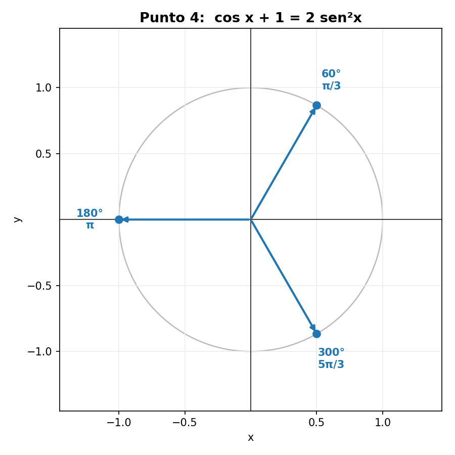

Soluciones paso a paso · Facultad de Ciencias — Ciencias Básicas (ITM)
Orientado a estudiantes de primer semestre de ingeniería
Identidades y conceptos usados en todo el taller
Conviene tener a la mano estas herramientas (válidas para todo ángulo, salvo donde un denominador se anule):
Definiciones (recíprocas y cocientes):
$$\csc x = \frac{1}{\sen x}, \qquad \sec x = \frac{1}{\cos x}, \qquad \cot x = \frac{1}{\tan x} = \frac{\cos x}{\sen x}, \qquad \tan x = \frac{\sen x}{\cos x}$$
Identidad pitagórica fundamental y sus despejes:
$$\sen^2 x + \cos^2 x = 1 \;\Longrightarrow\; \sen^2 x = 1 - \cos^2 x, \quad \cos^2 x = 1 - \sen^2 x$$
Diferencia de cuadrados (álgebra, no trigonometría):
$$a^2 - b^2 = (a - b)(a + b)$$
Notación: se usa $\sen$ (español) y $\ctg x = \cot x$.
Puntos 1 al 3 · Demostración de identidades
Estrategia: se toma uno de los lados (normalmente el más complicado) y se transforma con álgebra e identidades hasta llegar al otro. No se deben "pasar términos" como en una ecuación, porque eso supondría que la igualdad ya es cierta.
Definición de $\cot x = \dfrac{\cos x}{\sen x}$ y de $\csc x = \dfrac{1}{\sen x}$.
Identidad pitagórica $\cos^2 x = 1 - \sen^2 x$.
Factorización por diferencia de cuadrados: $1 - \sen^2 x = (1-\sen x)(1+\sen x)$.
Suma de fracciones con común denominador y simplificación de factores comunes.
Desarrollo (trabajamos el lado izquierdo)
Paso 1. Escribimos $\cot^2 x$ en términos de seno y coseno:
$$\sen x \cdot \cot^2 x = \sen x \cdot \frac{\cos^2 x}{\sen^2 x} = \frac{\cos^2 x}{\sen x}$$
Paso 2. Sustituimos y usamos $\cos^2 x = 1 - \sen^2 x$:
$$\frac{\sen x \cdot \cot^2 x}{1 + \sen x} = \frac{1 - \sen^2 x}{\sen x\,(1 + \sen x)}$$
Paso 3. Factorizamos por diferencia de cuadrados y cancelamos $(1+\sen x)$:
$$= \frac{(1 - \sen x)(1 + \sen x)}{\sen x\,(1 + \sen x)} = \frac{1 - \sen x}{\sen x}$$
Paso 4. Para ángulos con $\sen\beta > 0$ (caso del curso), $|\sen\beta| = \sen\beta$:
$$= \frac{2}{\sen\beta} = 2\csc\beta \qquad \blacksquare$$
Observación (rigor): el resultado exacto es $\dfrac{2}{|\sen\beta|}$. Coincide con $2\csc\beta$ solo cuando $\sen\beta > 0$; si $\sen\beta < 0$ el lado izquierdo (suma de raíces, siempre positivo) daría $-2\csc\beta$. En el nivel del taller se trabaja con $\sen\beta > 0$, pero conviene saber de dónde sale el valor absoluto.
Puntos 4 y 5 · Ecuaciones trigonométricas
Estrategia: aquí sí buscamos los valores de la variable. Se usa una identidad para dejar una sola función, se hace un cambio de variable para obtener una ecuación algebraica (cuadrática), se resuelve, se "deshace" el cambio y se hallan todos los ángulos del intervalo. Recordatorio: $180° = \pi$ rad.
Punto 4 Ecuación
$$\cos x + 1 = 2\sen^2 x, \qquad 0 \le x \le 360°$$
Conocimientos previos necesarios
Identidad pitagórica $\sen^2 x = 1 - \cos^2 x$ (para dejar todo en $\cos x$).
Resolución de ecuaciones cuadráticas (factorización o fórmula general).
Ángulos notables y signo de las funciones por cuadrante (círculo unitario).
Conversión de grados a radianes.
Desarrollo
Paso 1. Convertimos todo a coseno con $\sen^2 x = 1 - \cos^2 x$:
$$\cos x + 1 = 2(1 - \cos^2 x) = 2 - 2\cos^2 x$$
Paso 2. Igualamos a cero:
$$2\cos^2 x + \cos x - 1 = 0$$
Paso 3. Cambio de variable $u = \cos x$:
$$2u^2 + u - 1 = 0$$
Paso 4. Factorizamos:
$$(2u - 1)(u + 1) = 0 \;\Longrightarrow\; u = \tfrac{1}{2} \;\text{ ó }\; u = -1$$
Paso 5. Deshacemos el cambio en $0 \le x \le 360°$:
$\cos x = \tfrac{1}{2} \;\Rightarrow\; x = 60°,\ 300°$ (coseno positivo: cuadrantes I y IV).
$\cos x = -1 \;\Rightarrow\; x = 180°$.
$$\boxed{x = \frac{\pi}{3}, \quad x = \pi, \quad x = \frac{5\pi}{3}}$$
Verificación: para $x=60°$, $\cos 60° + 1 = 1.5$ y $2\sen^2 60° = 2(0.75) = 1.5$ ✓

Ángulos solución: $60°\,(\pi/3)$, $180°\,(\pi)$ y $300°\,(5\pi/3)$ sobre el círculo unitario.